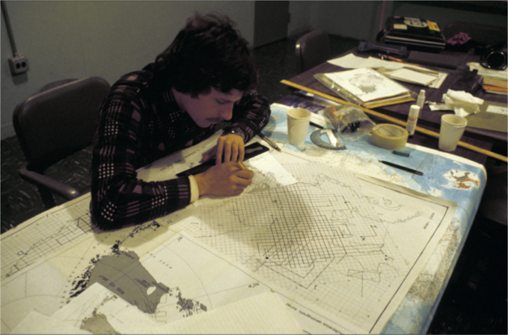
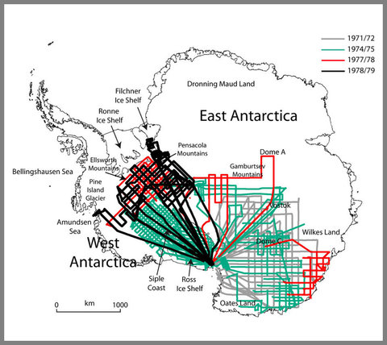
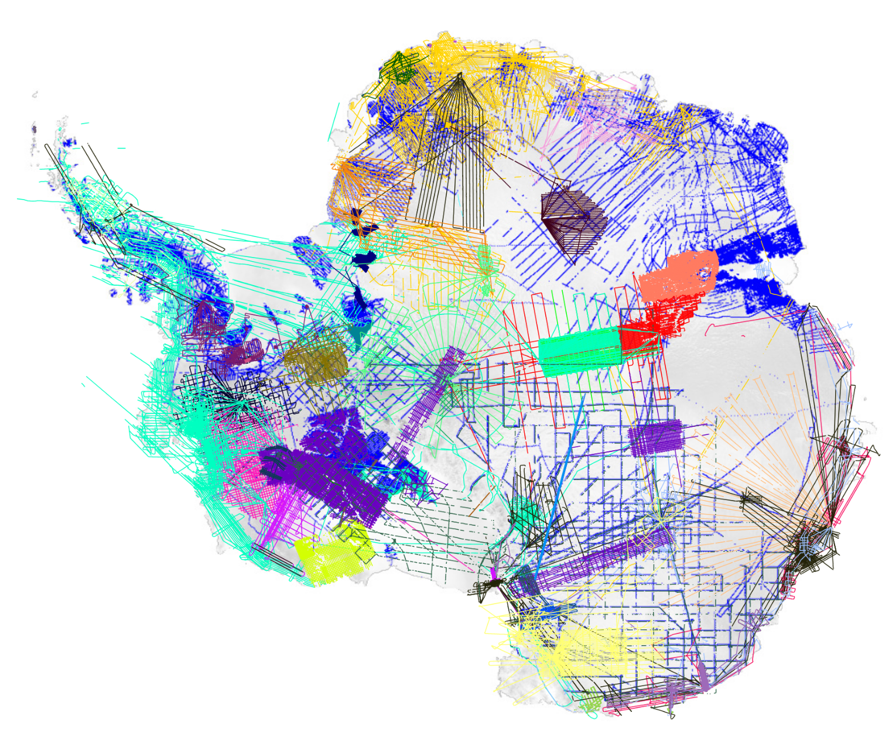
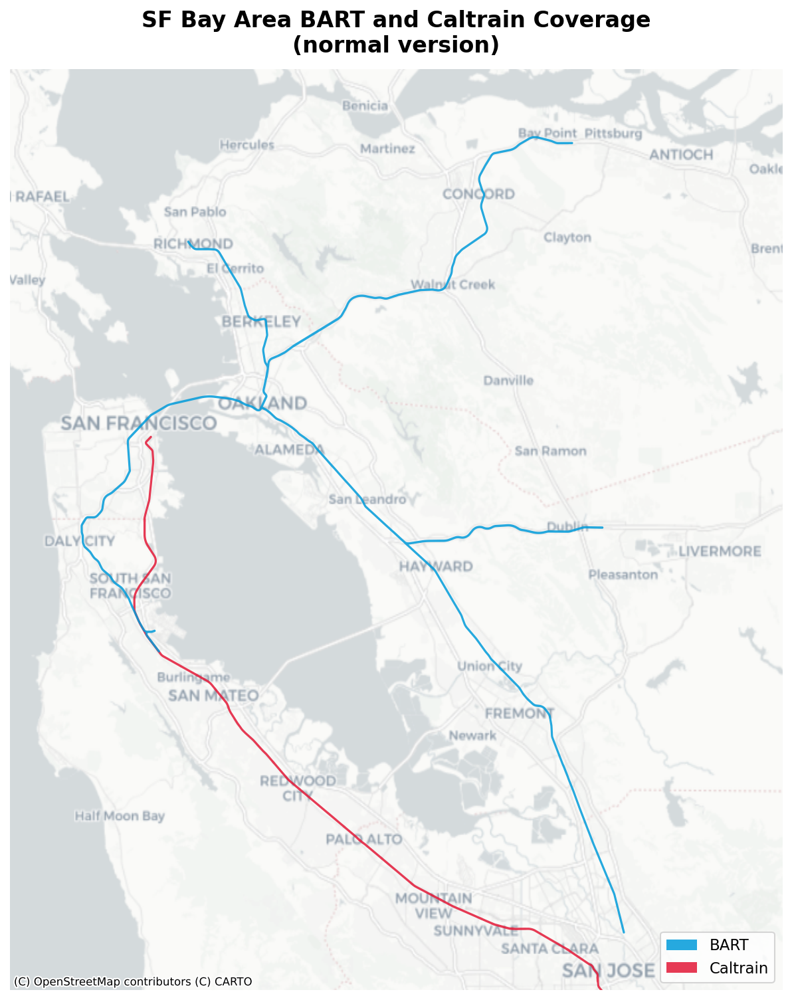
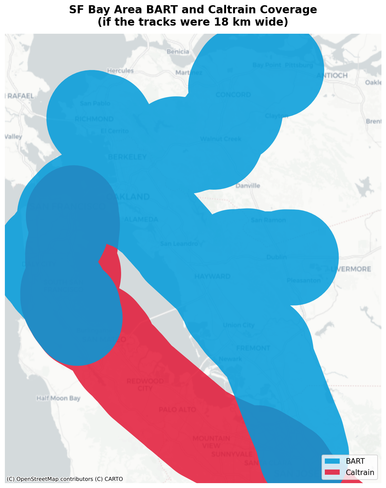
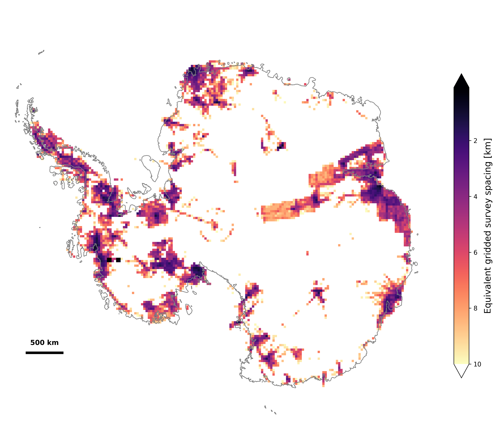

Mapping polar radar sounder data coverage
Since the 1950s, we’ve known that radar could be used to map the internal structure and the bedrock beneath glaciers and ice caps. In the 1960s and 70s, a collaborative effort between the Scott Polar Research Institute in the UK, the NSF in the US, and the Technical University of Denmark carried out an ambitious effort to map the the bedrock beneath Antarctica and Greenland, allowing estimates for the first time of one of the most basic questions: “how much ice is there?”

By 1982, we had a preliminary answer to this question: 30.11 +/- 2.5 million cubic kilometers, based off of “flight tracks covering 50% of the Antarctic Ice Sheet on a 50 to 100 km square grid,” as published by Drewry et al. (1982) (of the above image).
Sixty-some years later, we’re still using radar sounder data collected by aircraft to refine our estimates of the total mass and its associated potential sea level rise (the current best estimate is slightly lower at 26 +/- 0.4 million cubic kilometers, corresponding to 57.9 +/- 0.9 meters of equivalent sea level rise for Antarctica (Morlighem et al. 2019), if you’re curious).
We now also have a more pressing question: “how much of this ice could end up in the oceans in the next 20 years? 50 years? 100 years?” As it turns out, knowing where the the bedrock is beneath the ice, especially in the coastal regions where ice flows out towards the ocean, is crucially important to answering this question. (If you’re curious about why bedrock topography is so important to predicting sea level rise, this is a great explainer.)
Filling in the map
So how are we doing? The problem of getting the bed topography across an ice sheet is often referred to as “filling in the map,” so how filled in are the maps?



These three maps show all available radar sounder flight lines to date over Antarctica from 1980, 2014, and 2019. It looks like quite a lot of progress has been made since 1980. It should be a bit surprising, then, that lack of knowledge of bed topography continues to be identified as a leading source of uncertainty in sea level rise estimates (see, for example, Pritchard (2014), Seroussi et al. (2017), Schlegel et al. (2018), or Castleman et al. (2022), among many others).
There’s a fundamental problem with using the flight line maps as an indication of bed topography coverage. On the map on the right, for example, each line is roughly 12-18 kilometers wide, but radar sounders (mostly) measure the topography immediately below the aircraft, not over a wide swath. (And those that do measure a swath measure one that is much smaller than 18 kilometers.)
It’s worth pointing out that most of these maps were not made with the intention of serving as a guide of how much we have left to fill in, but they are, nonetheless, often used that way for lack of anything better.
To illustrate this point in a more entertaining way, let’s say you were looking at a map of the BART and Caltrain public transit systems in the San Francisco Bay Area, with each route line having a width of 18 kilometers (right) or a more normal width (on the left) to give you some context.


If you only had the map on the right, you might conclude, for example, that all of San Francisco is within easy walking distance of both of these two public transit rail systems. Even recognizing that these tracks are unrealistically wide, you might make some incorrect inferences, such as assuming that they connect in San Francisco and San Jose (they do not — the connection point in is Millbrae).
This example is perhaps a bit contrived, but it hopefully illustrates the challenge of representing radar coverage on a continent almost 50% larger than the contiguous US.
A better visualization for the purpose
We can draw inspiration for better visualizations from how studies looking at bed topography resolution talk about their recommendations. Quoting from the recommendations of a few selected studies:
In the context of short‐term ice sheet forecast, we show that in coastal regions, the bedrock elevation should be known at a resolution of the order of one kilometer. [Durand et al., 2011]
The sea-level contribution indicates a converging behaviour below a 1 km horizontal resolution. (Rückamp et al. 2020)
Experiments that test spatial resolution requirements suggest that we need bedrock geometry to be measured at a spatial resolution of 2 km or less in order to accurately characterize the bedrock topography pinning points and to minimize ice-sheet model uncertainty on 200-year timescales. In particular, we find that at a resolution finer than approximately 2 km (at sensitive glacial regions), estimated SLR contribution converges (Fig. 3). (Castleman et al. 2022)
All of the models discussed here (and all that participated in ISMIP6) discretize the domain into some sort of a grid or mesh, so looking at topography in terms of how it compare to the spatial resolution of the model makes sense.
One way to think about this is to take small regions and ask “if all of the survey lines in this region had been part of a uniform gridded survey, what would the spacing of those grid lines be?” This gives us a way to plot data density — and the studies above give us some idea of the target metrics. This handy interactive visualization (generated by Claude) shows how this metric maps flight lines to equivalent survey density:
15 km
18
Applied to all of Antarctica with 30 km grid cells, this is the map we get:

This heatmap reflects a lot of interesting properties of how airborne surveying in Antarctica works. Surveying is concentrated around where there are research facilities (and, therefore, runways). There are, of course, some heavily surveyed areas away from any permanent facilities too. These are the result of dedicated campaigns that usually set up temporary field camps to support intensive surveying in a region of particular interest.
There’s a lot of white on this map (corresponding to 30 kilometer cells with less than 10 kilometer equivalent grid density) and very little black (corresponding to the roughly 1 kilometer equivalent gridded spacing recommended by some of the studies above). Luckily, those studies were looking at specific near coastal areas, where models are much more sensitive to small changes than in the interior, so you can think of the target as filling in a ring around the coastline, rather than filling in the entire continent. Still, you see we’re a long way from where we’d like to be.
We can get a better sense by looking at the Amundsen Sea Embayement, a region containing the much-discussed Thwaites and Pine Island glaciers responsible for the fastest mass loss in Antarctica today.
Drag the slider to see the raw flight lines view versus the equivalent gridded spacing heatmap.
Thwaites and Pine Island have attracted a lot of attention over the past two decades due to their rapid mass loss and the potential that they retreat and provide a pathway for warm ocean water to reach the deep interior of the West Antarctic Ice Sheet, which stores 3-5 meters of equivalent global sea level rise. This map clearly shows that focus on Thwaites and Pine Island, with these glaciers among the best surveyed regions of anywhere except the immediate vicinity of research stations.
(The extremely dense grids that correspond to the black blobs in the density map are from an experimental survey that flew many closely-spaced lines to create a two-dimensional topographic map of the bed in the region (Holschuh et al. 2020).)
Most coastal areas don’t receive the same attention. The Wilkes Subglacial Basin in East Antarctica has a similar reverse-sloping bed and is grounded well below sea level. It contains about 3-4 meters of equivalent sea level, much of which drains through Cook Glacier (Crotti et al. 2022). In contrast to Thwaites, the coastal regions around Cook Glacier have far less data around the grounding zone.
Use these maps
The point of this post is not to convince you that we need to rethink how we collect radar sounder data to make Antarctica a data-rich continent (though we do). The point is that we should think beyond flight line maps in considering our data coverage and resolution. The good news is that xOPR makes it really easy to reproduce figures like these. The code to produce these figures is MIT-licensed and available on GitHub (and a collection of useful figures like these are dynamically built and hosted on the docs page of that repo). So the next time you need a figure showing radar sounder data coverage, grab one of these or remix your own customized version.
What’s missing here
In reality, there’s a lot more to radar sounder coverage than just “filling in the map.” This post is about better visualizations, but there’s a lot more to consider. We’ll leave these topics to future posts, but here are few things to consider:
- Access to data matters – the data plotted above is radar sounder data that exists but not necessarily data that’s available publicly. We’re working hard on changing that.
- Not all data is of the same quality or fit for the same purpose. Radar sounders are not commodity instruments. The best instruments for producing the detailed swath topography surveys pointed out above are not the same as the best instruments for seeing through the deepest ice or making the best radiometric measurements.
- Radar sounders aren’t just about topography. Radar sounders can also tell us about the presence of water, the internal velocity structure, the ice temperature, and more. These are all signals that change on much faster timescales than the bedrock (which does also change, just slowly). As we see accelerating changes in the polar regions, having repeat measurements becomes increasingly important.